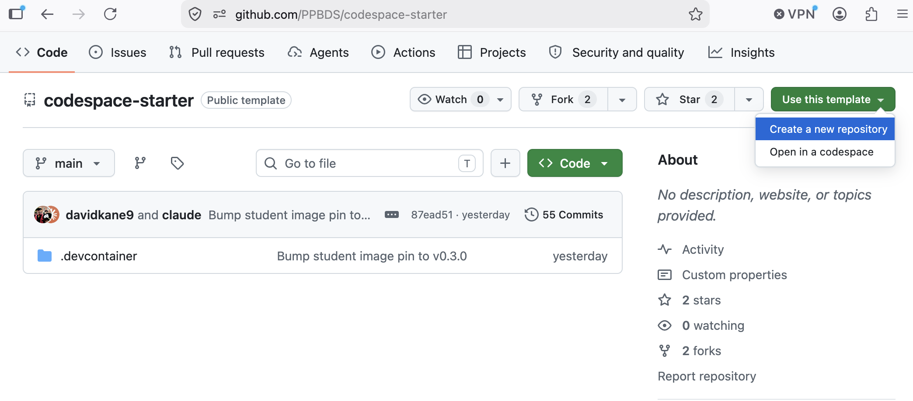
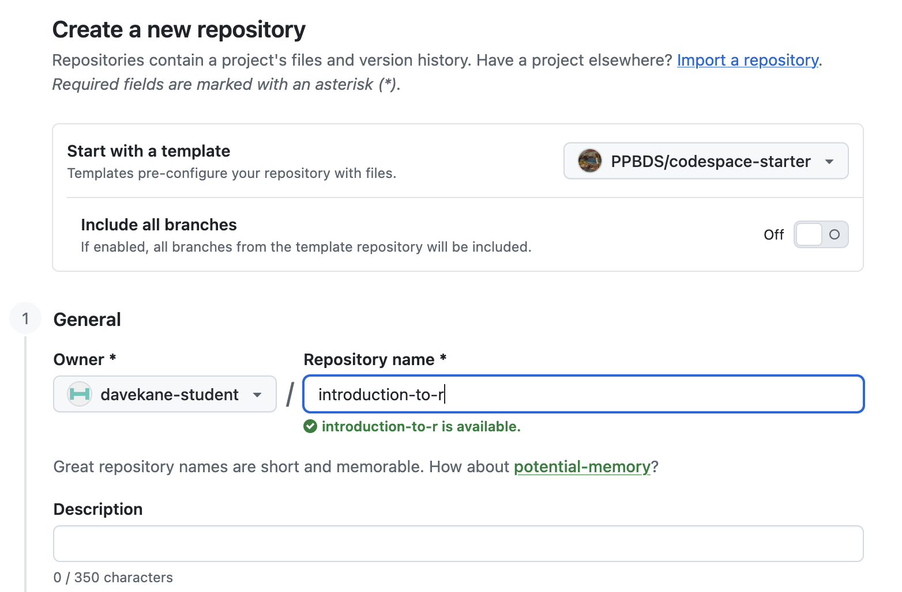
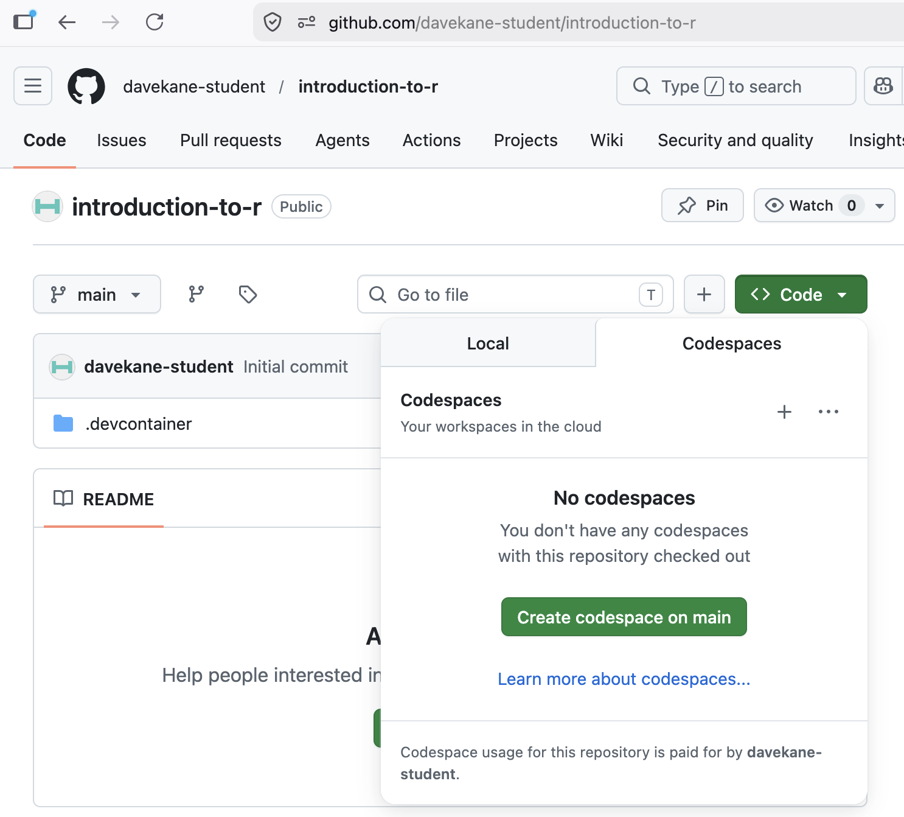

Git and GitHub
By now you have completed at least one tutorial in Start mode: the throwaway Codespace from the Getting Started chapter.
A throwaway Codespace keeps nothing: the moment you delete it, everything you did inside is gone. As the tutorials get more involved, you will want to keep your work and build on it from one session to the next. That is what this chapter is about.
The tool for the job is a repository — a “repo” — a project that lives permanently in your own GitHub account. Recall from Getting Started that GitHub organizes everything into repos. A repo you own is a permanent home for your work: anything you save to it stays there, available the next time you open a Codespace, and nothing is lost when a Codespace is deleted. Saving to a repo is done with Git, the version-control system built into VS Code’s Source Control panel; GitHub is where those saved versions live online.
When a tutorial asks you to keep your work, you make a repository for it. The naming rule is simple: the repository name is the tutorial id — the tutorial title in lowercase, with spaces replaced by dashes — so “Probability” becomes probability, and so on.
There are two ways to create that repository:
-
Launch (recommended) — Launch the same fast, pre-built
codespace-starterCodespace you already know, then run one command (connect-repo.sh) that creates a repository you own and sets you up to work in it. You get the quick startup and a permanent home for your work. -
Template — Use GitHub’s “Use this template” button to copy
codespace-starterinto a repository you own, then launch a Codespace on that copy. It does the same job as Launch, but the first launch is slow (several minutes) because your copy has no pre-built image. We document it as a fallback option.
For a given tutorial you use Launch or Template, not both.
Launch mode: your own repo, the fast way
This is the recommended method for tutorials that need their own repository, which is almost all tutorials going forward. You launch the same fast, pre-built codespace-starter Codespace you used in Start mode, then run a single command that creates a repository you own and sets you up to work in it — so you get the quick startup and a permanent home for your work.
The walkthrough below uses my-tutorial as a stand-in — put the id of whatever tutorial you are on in its place.
Launching the Codespace
Exactly as in Start mode: from https://github.com/PPBDS/codespace-starter, click the green Code button, switch to the Codespaces tab, and click “Create codespace on main.”
When the Codespace finishes loading, the terminal greets you with a banner:
════════════════════════════════════════════════════════════
✅ YOUR CODESPACE IS READY
Start your own project (creates a new repo):
.devcontainer/connect-repo.sh <repo-name>
Full guide: /workspaces/codespace-starter/.devcontainer/STUDENT_WORKFLOW.md
Type `clear` to remove this banner.
════════════════════════════════════════════════════════════That banner is also your “ready” signal: when it appears, every extension and R package is installed and the Codespace is fully set up. (If you want it gone, type clear, as it suggests.)
Creating your repository
In the terminal, run the command the banner shows, using the tutorial id as the repository name:
.devcontainer/connect-repo.sh my-tutorialThe first time you run this in a Codespace, you are asked to sign in to GitHub: a one-time code appears and a browser tab opens — paste the code and click Authorize. This signs you in as yourself, which is what lets the Codespace create and save to your own repositories.
When it finishes, you get:
my-tutorial $ bash /workspaces/codespace-starter/.devcontainer/welcome.sh
my-tutorial $ Your repository now exists at https://github.com/<your-username>/my-tutorial, and a copy has been downloaded into the Codespace at /workspaces/my-tutorial.
Look at the Explorer in the upper left — it should now read MY-TUTORIAL. You are working inside your own repository, and anything you commit and push from the Source Control panel is saved there permanently.
Running the tutorial
Click the R Tutorials icon on the Activity Bar. Select and start your tutorial — the same way you started “Getting Started” in Start mode. Read and follow the instructions, and download your answers at the end.
Stopping the Codespace
When you are done, stop the Codespace (Command Palette → “Codespaces: Stop Current Codespace,” or from your Codespaces page). Your work is safe in your my-tutorial repository, so it is fine to reopen this Codespace later or to delete it — deleting discards only the Codespace, never your pushed work. Anything you have not committed and pushed is lost when a Codespace is deleted.
Template mode: your own repo, the slow way
Launch mode (above) is the recommended way to create a tutorial repository. Like Launch, this is only for the later tutorials that need their own repository. It produces the same kind of owned repository, but its first launch is much slower, so use it only as a fallback — for a given tutorial you use Launch or Template, not both.
It works by copying codespace-starter into a repository you own. (The screenshots below were captured with an example repo name; use your tutorial’s id.)
Creating the repository from the template
Go back to https://github.com/PPBDS/codespace-starter. Click the green “Use this template” button at the top right and select “Create a new repository.”
In the Repository name field, type the tutorial id (its title in lowercase, spaces replaced by dashes — the same naming rule as Launch mode). Leave everything else at the defaults, then click Create repository from template.

You now own a repository at https://github.com/<your-username>/<tutorial-id>. It is identical to PPBDS/codespace-starter but yours — anything you do here can be saved permanently, unlike in a Start-mode Codespace.
Launching a Codespace on your repo
From your new repository’s page, click the green Code button, switch to the Codespaces tab, and click “Create codespace on main.”

This Codespace takes several minutes longer to launch than a Start- or Launch-mode one. The reason: PPBDS/codespace-starter has a pre-built container image, but your template copy does not, so the container builds from scratch the first time. (That slow build is exactly why we recommend Launch.) Subsequent launches of this same Codespace are fast.
Stopping the Codespace
When you are done, stop the Codespace — via the Command Palette or your Codespaces page. Because your work lives in your own repository, your committed-and-pushed work is safe whether you stop, reopen, or delete the Codespace. (Anything you have not committed and pushed is lost on delete.)
Summary
Once your work is worth keeping, you give it a permanent home in a repository under your own account on GitHub, named with the tutorial id (the title in lowercase, with spaces replaced by dashes). There are two ways to create one:
-
Launch (recommended) — launch the fast
codespace-starterCodespace and runconnect-repo.sh <tutorial-id>to create and open your repo. -
Template (slower fallback) — copy
codespace-starterwith “Use this template,” then launch a Codespace on your copy.
Either way, you end up working inside your own repository, where commit + push from the Source Control panel saves your work permanently — safe whether you stop, reopen, or delete the Codespace.